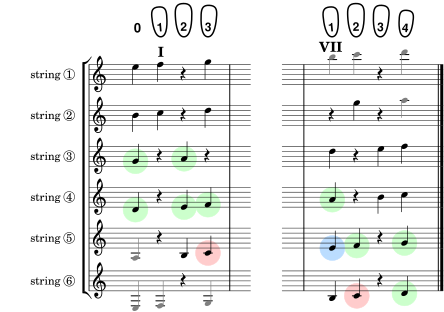

Here's the musical fretboard diagram for the first six notes that were introduced in the previous section. Each time we introduce new notes, they will be highlighted in yellow, but since you've seen them already they're all in green, except for the special note in blue (to find seventh position) and the first two in red (the root of our scale).
The exercises in Group A use only these six notes so you can solidify your memory of how to finger them. Be sure to play each exercise in both seventh and first positions.
Consider playing these as simple warm ups before starting a sightreading session.
Scale 1. Your first six, up and back.
Scale 2. The odd and even triads.
The boxes below automatically keep track of which exercises you've seen in this group (you get a gold star for each exercise you visit). And clicking on a box will take you to that exercise (you can see the exercise number by hovering over a box and looking at the url displayed). So all this lets you pick up where you left off in your last session, or go on to some random exercise you haven't seen yet. Courtesy of your browser history.